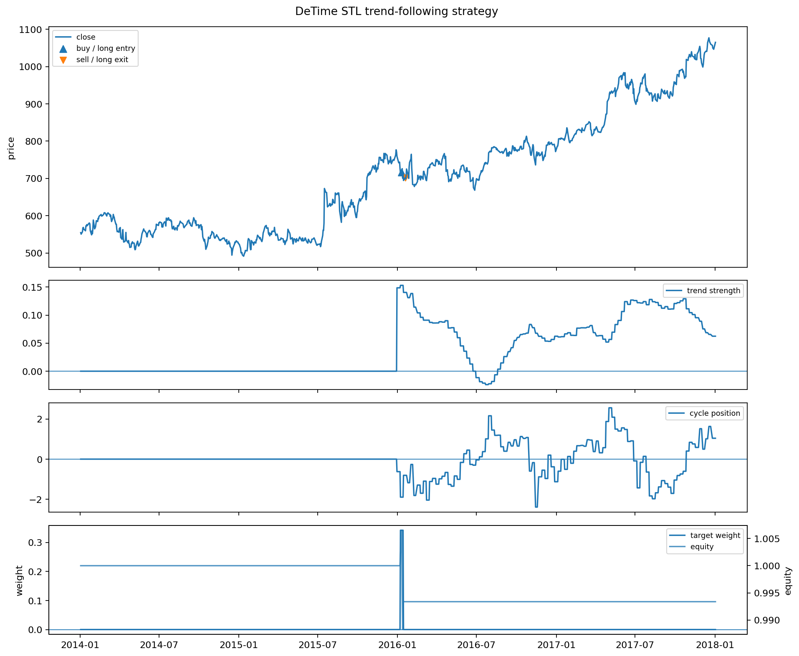

Strategy Lab 01 - Trend-following strategy
Executed tutorial notebook. This page is generated from
examples/notebooks/quant_trading/01_detime_trend_following_strategy_lab.ipynb and includes markdown cells, code cells, stdout, tables, and captured figures from the committed notebook.
Tutorial Navigation
| Track | Tutorial notebook |
|---|---|
| Roadmap | Tutorial 00 - Roadmap |
| Strategy Lab | 01 Trend-Following Lab |
| Tutorial Sequence | 01 Real Market Data and Feature Factory |
| Tutorial Sequence | 02 Decomposition-aware MA and MACD |
| Strategy Lab | 02 Oscillation-Reversion Lab |
| Strategy Expansion | 03 Method-Specific Variants |
| Tutorial Sequence | 03 Residual Mean Reversion |
| Strategy Expansion | 04 Component Pair Trading |
| Tutorial Sequence | 04 Donchian Breakout |
| Tutorial Sequence | 05 Pair-Spread Stat-Arb |
| Tutorial Sequence | 06 Cross-Sectional Rotation |
| Native SSA Replay | 07 Native SSA High-Return / Low-Drawdown |
Executed Notebook
这篇只做一件事：用 DeTime 分解出来的 trend 直接产生交易信号。
策略逻辑：
trend_slope > 0且trend_strength足够强，说明进入上涨趋势状态。cycle_position不在过热区，避免在周期顶部追进去。residual_abs_z不过大，避免追到结构外的异常拉伸。- 如果有成交量分解，则用
volume_trend_slope / volume_residual_z确认参与度。 - 信号在第 t 根 bar 结束后生成，回测用下一根 bar 的开盘价成交。
In [1]
from pathlib import Path
import pandas as pd
from IPython.display import Image, display
from quant_trading.data import load_sample_goog_ohlcv
from quant_trading.decomposition_features import walkforward_price_volume_features
from quant_trading.strategy_lab import (
TrendFollowingConfig,
OscillationReversionConfig,
backtest_signal_set,
execution_price_panel,
decomposition_trend_following_signals,
decomposition_oscillation_reversion_signals,
plot_signal_analysis,
stats_table,
)
from quant_trading.strategy_baselines import (
buy_and_hold_weights,
dual_moving_average_weights,
bollinger_mean_reversion_weights,
)
from quant_trading.strategy_lab import backtest_target_weights_next_bar
CHART_DIR = Path("examples/quant_trading/reports/strategy_lab/charts")
In [2]
ohlcv = load_sample_goog_ohlcv(trim_start="2014-01-01")
symbol = "GOOG"
close = ohlcv["Close"].rename(symbol).to_frame()
volume = ohlcv["Volume"].rename(symbol).to_frame()
execution_prices = execution_price_panel(ohlcv, field="Open", next_bar=True)
execution_prices.columns = [symbol]
features = walkforward_price_volume_features(
close, volume, method="STL", period=126, train_window=504, step=5, z_window=63
)
list(features)[:8]
text/plain
['trend',
'cycle',
'residual',
'trend_slope',
'trend_acceleration',
'trend_strength',
'trend_gap',
'cycle_z']
In [3]
signal = decomposition_trend_following_signals(
close,
features,
config=TrendFollowingConfig(
entry_trend_strength=0.15,
exit_trend_strength=0.02,
max_entry_cycle_position=1.25,
max_entry_residual_abs_z=2.5,
use_volume_confirmation=True,
allow_short=False,
),
name="detime_STL_trend_following",
)
bt = backtest_signal_set(
close, signal, execution_prices=execution_prices, fee_bps=5, slippage_bps=2, periods_per_year=252
)
baselines = {
"buy_hold": buy_and_hold_weights(close),
"classic_sma_20_100": dual_moving_average_weights(close, fast=20, slow=100),
}
results = {signal.name: bt}
for name, weights in baselines.items():
results[name] = backtest_target_weights_next_bar(
close, weights, execution_prices=execution_prices, fee_bps=5, slippage_bps=2, periods_per_year=252, name=name
)
stats_table(results)
text/html
| strategy | total_return | cagr | sharpe | max_drawdown | calmar | volatility | hit_rate | trade_win_rate | average_trade_directional_return | orders | round_trips | median_bars_held | average_turnover | average_gross_exposure | fee_bps | slippage_bps | periods_per_year | execution_model | |
|---|---|---|---|---|---|---|---|---|---|---|---|---|---|---|---|---|---|---|---|
| 1 | buy_hold | 0.887479 | 0.172116 | 0.799165 | -0.192787 | 0.892778 | 0.232171 | 0.524802 | NaN | NaN | 1.0 | 0.0 | NaN | 0.000000 | 1.000000 | 5.0 | 2.0 | 252.0 | signal_on_bar_t_fill_next_bar_open_or_proxy |
| 2 | classic_sma_20_100 | 0.010232 | 0.002548 | 0.107019 | -0.297157 | 0.008576 | 0.187310 | 0.332341 | 0.25 | -0.002942 | 17.0 | 8.0 | 67.0 | 0.016865 | 0.630952 | 5.0 | 2.0 | 252.0 | signal_on_bar_t_fill_next_bar_open_or_proxy |
| 0 | detime_STL_trend_following | -0.006633 | -0.001663 | -0.213044 | -0.018183 | -0.091433 | 0.007671 | 0.002976 | 0.00 | -0.018574 | 2.0 | 1.0 | 5.0 | 0.000678 | 0.001696 | 5.0 | 2.0 | 252.0 | signal_on_bar_t_fill_next_bar_open_or_proxy |
In [4]
bt.orders.tail(10)
text/html
| asset | signal_date | fill_date | action | previous_weight | new_weight | delta_weight | fill_price | |
|---|---|---|---|---|---|---|---|---|
| 0 | GOOG | 2016-01-08 | 2016-01-11 | buy | 0.000000 | 0.341871 | 0.341871 | 716.609985 |
| 1 | GOOG | 2016-01-15 | 2016-01-19 | sell | 0.341871 | 0.000000 | -0.341871 | 703.299988 |
In [5]
bt.trades.tail(10)
text/html
| asset | side | entry_signal_date | entry_fill_date | exit_signal_date | exit_fill_date | entry_price | exit_price | bars_held | entry_weight | directional_return | approx_weighted_return_after_cost | |
|---|---|---|---|---|---|---|---|---|---|---|---|---|
| 0 | GOOG | long | 2016-01-08 | 2016-01-11 | 2016-01-15 | 2016-01-19 | 716.609985 | 703.299988 | 5 | 0.341871 | -0.018574 | -0.006589 |
In [6]
out = CHART_DIR / "notebook_01_trend_following.png"
plot_signal_analysis(ohlcv, signal, bt, asset=symbol, output_path=out, title="DeTime STL trend-following strategy")
display(Image(filename=str(out)))
out.as_posix()
image/png

text/plain
'examples/quant_trading/reports/strategy_lab/charts/notebook_01_trend_following.png'